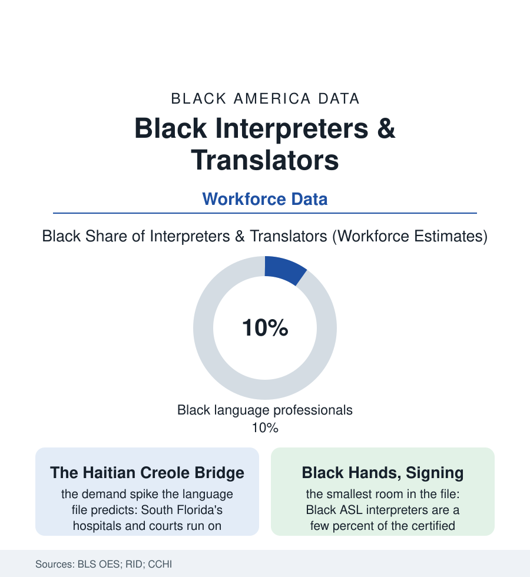

Black Employment
The Bridge Workers: Black Interpreters, Translators, and Language Professionals
Every hospital consent and courtroom plea in two languages passes through one workforce — and Black linguists staff the bridges into Creole, Spanish, French, and sign. The bridge file.

Some workers move freight and some move patients; interpreters move meaning itself — the diagnosis into Creole, the plea into English, the mother's instructions into sign — and the accuracy of the entire institution rides on their rendition. Black language professionals staff the bridges into this atlas's own multilingual communities. This article reads the bridge file.
The Consequential Tongues
The demand map is the language file rendered as a staffing table: Haitian Creole interpreters load-bearing in South Florida's and the Northeast's hospitals and courts (the certification data showing a workforce drawn overwhelmingly from the diaspora itself — the bilingual child's childhood errand, interpreting at the parent's appointments, professionalized into the credential), Spanish-language Black interpreters from the Afro-Latino communities serving a system whose forms assume the bilingual staffer will be found among the Latino hires, French for the Congolese and Haitian caseloads of the resettlement cities, the African languages' long tail staffed by the immigrant professionals of the refugee file — each of them performing, in the encounter data, a function the outcomes literature prices precisely (the interpreted visit's error rates, the uninterpreted visit's catastrophe rate — the studies of ad-hoc interpretation by family members and children documenting the clinical and legal errors the professional exists to prevent, the language-access law's requirements standing on the books exactly as funded as the institutions choose). The settings sort the workforce by consequence: the medical interpreter's certification and ethics code, the court interpreter's oath and its examinations (the federal and state rosters' pass rates their own equity file), the conference and diplomatic tier at the profession's summit — a tier whose Black membership in the association data is thin enough to be directory-able by name, the summit's demographics the file's familiar skyline.
The occupation's economics sort its practitioners as sharply as its settings: the staff interpreter's hospital salary and benefits at one pole, the freelance economy's per-minute and per-word rates at the other — the language-services industry's consolidation (the national agencies contracting the hospitals' lines, the video-remote platforms dispatching the encounter to whoever is logged on) pressing the freelance rates in the association surveys while the certified specialists of the consequential rooms hold theirs. The Black freelancer's book, in the profession's own accounts, is built the bridge way: the community's institutions as anchor clients — the Creole church's conferences, the school district's IEP meetings, the legal-aid office's intakes — a practice whose client list is the atlas's institutional map read aloud in two languages.
The Signing Divide
The file's most documented interior border runs through the Deaf world: the interpreting profession that serves the Black Deaf community is, in the registry data, overwhelmingly white — Black certified interpreters a few percent of the corps — while Black Deaf Americans sign, in the linguistic record, a distinct variety with its own history (Black ASL, documented by the landmark Georgetown research as the product of the segregated Deaf schools of the South — the dialect preserved, like Gullah's grammar, by the very separation imposed on it, its features now the subject of the field's own reckoning with a century of hearing, white-normed training). The working consequences sit in the encounter data like the medical file's: the Black Deaf patient or defendant interpreted by a professional who does not command her variety, the mismatch recorded in satisfaction and outcome studies, the pipeline programs of the recent data (the interpreter-training programs at the HBCUs and the Deaf-led initiatives recruiting Black interpreters deliberately) working the file's now-standard correction. Above the whole profession hangs the machine: the translation engines' quality in this file's languages — Creole's low-resource status in the training data, the engines' renditions audited and found wanting in the hospital studies — marking the human bridge workers' near future as the profession's anxious literature debates it, the likeliest outcome in the labor data being the familiar one: the routine work automated, the consequential rooms — the consent, the testimony, the diagnosis — still staffed by the certified, bilingual, bicultural humans the registries count.
Reading the Bridge Data
The bridge file is the employment section's reminder that access is a person before it is a policy: a law can promise an interpreter, but a woman from Cap-Haïtien with a certification and a headset is what the promise looks like when it keeps itself. The BLS counts the occupation. The waiting rooms count on it.
More in Black Employment
The Black Unemployment Rate: The Two-to-One Pattern
Black unemployment runs at roughly twice the White rate — 5.5 percent against 3.3 percent in annual averages — a ratio stable across five decades of federal data. How it is measured and why it persists.
Black Median Weekly Earnings: The 80-Cent Ratio
Black full-time workers earn a median of about $900 a week — roughly 80 cents for every dollar White workers earn. The BLS earnings data by group, gender, and occupation.
Black Labor Force Participation: Working at National Rates
Black labor force participation runs at roughly the national rate — and Black women participate at higher rates than White women. The BLS participation data.
Source: U.S. Bureau of Labor Statistics Occupational Employment Statistics; Registry of Interpreters for the Deaf; Certification Commission for Healthcare Interpreters; American Translators Association.